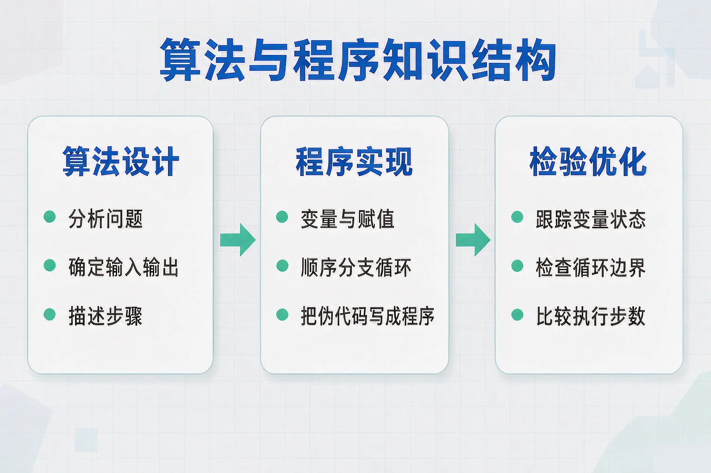
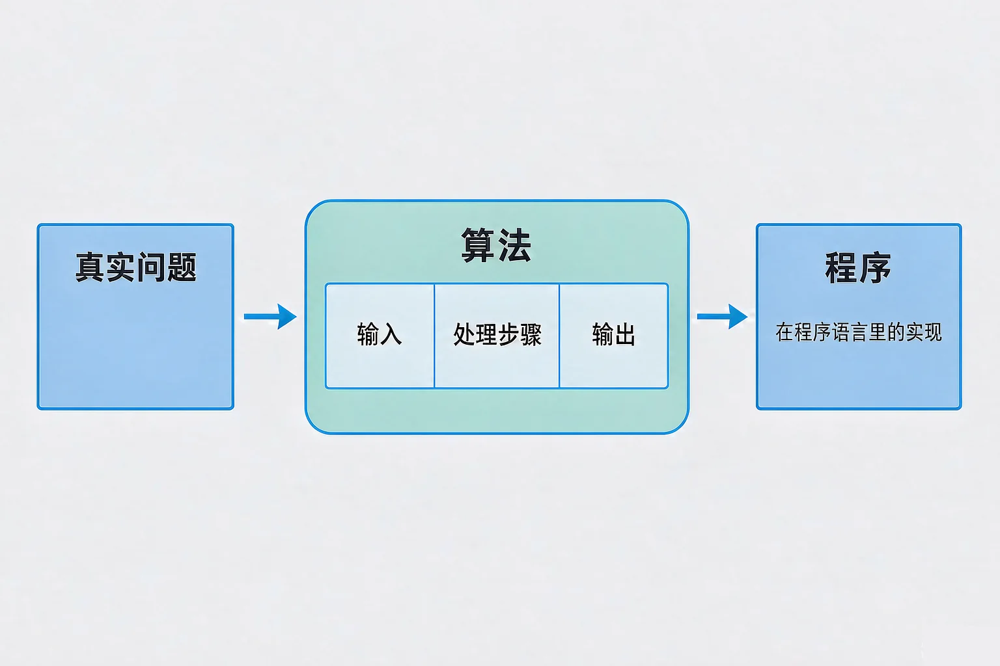
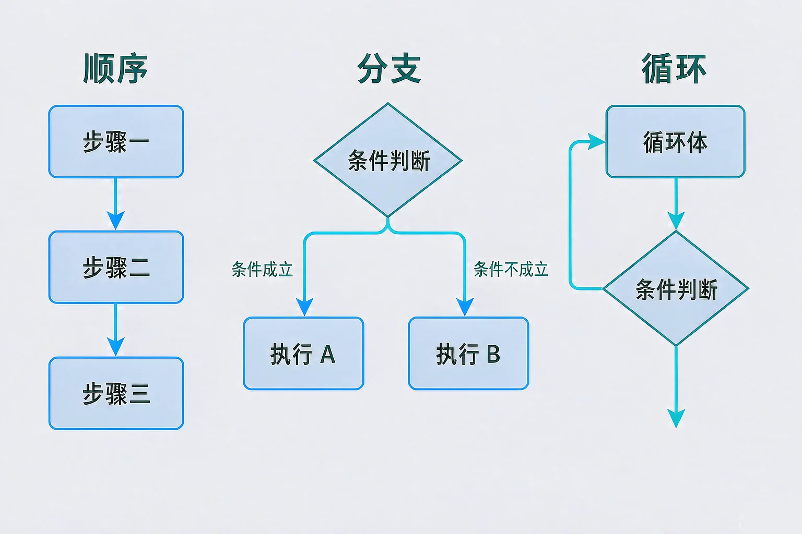

Gallery
v1.0.0 · skill v7.22.0
初中七年级 · 数据与算法
一个必须反复做、又不能出错的任务，怎样变成计算机能照着执行的方案？

选一个你真正好奇的问题，后面的实验都会围着它转。
选择或输入后，这节课会围绕你的问题展开。
先凭直觉选一个，选完立刻看到解释——错了也没关系，正好知道要重点听哪里。
1. 下面关于「算法」和「程序」的说法，正确的是：
算法是思路，程序是具体的实现。同一个算法可以写成不同的程序。错因提醒：把算法和程序搞混，是这一课最常见的错误，请记住一个在前、一个在后。
2. 一段算法必须有输入和输出吗？
说清楚输入和输出，才能判断算法到底解决了什么问题，也才能检验它算得对不对。
3. 一个算法在数据不断变化时，只要能算出正确答案就可以了，步数多少无所谓。这句话：
同样能算对的两个算法，执行步数可能差很多。这个问题先记在心里，等下做查找实验时会看得很清楚。
为什么要学这一课？你已经会用流程图描述生活里的做事顺序了，但真实的计算任务动辄几十万条数据，靠人一步一步盯着做根本做不完。所以我们需要把解决问题的步骤写成计算机能照着执行的算法，再用程序把它实现出来。
算法要满足的三个条件
① 确定性：每一步的含义唯一，不能有歧义；② 有穷性：步骤有限，执行完能停下来；③ 可行性：每一步都真的做得到。
算法与程序的关系
算法是思路，程序是这个思路在某种程序语言里的具体实现。同一个算法，可以写成不同的程序。

🔍 深层理解 换个角度再看一遍这件事，看看能不能说出背后的原理。
看见它：同一份数据，同一件事，不同的算法会走不同的路，用的步数可能差几十倍。
拆开它：任何一个算法都能拆成三段：从哪里拿数据（输入）、中间怎么处理（步骤）、最后给出什么（输出）。
解释它：为什么要求确定性？因为计算机不会猜你的心思。一句有歧义的指令，它就不知道该怎么执行。
点「单步执行」，高亮行会一行一行往下走，右边的变量盒会同步变化。留意比较次数是怎么累加的。
伪代码：找出数据表里的最大值
变量盒（实时状态）
数据表 d
点「单步执行」开始。
变量：贴了标签的盒子。给它一个新值，盒子里的内容就变了，这个动作叫做赋值。写程序时最容易出错的地方，就是忘了先给盒子放一个初值——空盒子没法参与比较。

易错点：循环的边界。「下标 ≤ 数据个数」和「下标 < 数据个数」只差一个符号，执行结果却完全不同：前者会处理到最后一个数据，后者会漏掉它。写完循环，一定要拿最小的数据和最大的数据各试一遍。
数据已经按 1、2、3…… 的顺序排好。先选数据个数和目标值，再分别跑一次两种查找，比较步数。
题目：有同学这样写「找最大值」的算法：直接循环比较，遇到更大的就更新最大值。这段算法哪里有问题？请说明理由并改正。
第一步 看清问题：输入是一组数据，输出是其中最大的那个数。
第二步 找漏洞一：最大值这个变量没有赋初值，第一次比较时它是一个空盒子，没法比。改正：先让它等于第一个数据。
第三步 找漏洞二：循环的结束条件写得不清楚，容易漏掉最后一个数据。改正：写成「下标 ≤ 数据个数」，保证每个数据都被看到。
第四步 逐行自查：用最小的那一组数据试一遍，再用最大的那一组试一遍，结果都对，算法才算改好了。
最容易出错的是「忘了赋初值」。不少同学误认为变量一写出来就自动是 0，其实没有赋值的变量是空的，拿它去比较，程序的行为就不确定了。第二常见的错误是把循环边界写成「下标 < 数据个数」，结果永远是最后一个数没被比较到。
先凭直觉选一个，选完立刻看到解释——错了也没关系，正好知道要重点听哪里。
1. 下面哪句话是正确的？
算法和程序是两个层次：先有思路，再有实现。错因提醒：把这两个词搞混，是这一课最高频的常见错误。写得短不等于跑得快，步数多少才是关键。
2. 要统计一组数据里有多少个数大于 60，下面哪一步必不可少？
计数器必须从 0 开始，否则加的基数就是错的。错因提醒：很多同学误认为变量不赋值也自动是 0，实际上没有赋初值的变量是空的，统计结果一定不对。
3. 在「找最大值」的算法里，把判断条件写成「如果 d[下标] ≥ 最大值」，最可能出现的问题是：
≥ 和 > 在结果上常常一致，但条件越精确，多做的无用步骤越少。错因提醒：不要以为「结果对就等于算法对」，还要看执行了多少步。
需求：读入一周的用电量和一个阈值，找出超过阈值的天数。左边有九张卡片，其中一张是别的问题里混进来的，先把它排除掉。
步骤卡片池
我的算法（按顺序）
写下来，说给同桌听：为什么计数器必须在循环之前初始化？如果把「超标天数 ← 0」放在循环里面，会发生什么？
先凭直觉选一个，选完立刻看到解释——错了也没关系，正好知道要重点听哪里。
1. 要在一份成绩单里找出最高分，最合适的写法是：
初值设为第一个数据最稳妥。设成 0 在全是负分时就会出错；设成 100 在满分超过 100 时也会出错。错因提醒：初值选得随意，是结果不对的常见原因。
2. 玩「猜数字」时，范围是 1 到 100。每猜一次都会告诉你「大了」或「小了」，最有效的策略是：
这就是二分法的思路：每猜一次排除一半的可能，100 以内最多 7 次就能猜到。顺序猜最坏要 100 次。错因提醒：很多同学误认为随机猜比较快，其实随机猜的最坏情况比顺序猜还慢。
3. 一段程序跑出来的结果和预期不一样。按照这节课学到的方法，最先该检查的是：
绝大多数算法的错误都出在这两处：变量没有正确初始化、循环少走或多走了一次。先查这两处，再谈重写。
回到开头那份体测数据：五十条数据用眼睛比很容易看漏，写成算法之后，程序会老老实实从头比到尾，一次不漏。而且换一批数据，算法完全不用改——这就是「先设计算法、再写程序」的价值。
给别人讲一遍：请用「输入、变量、循环、输出」这四个词，说清楚你是怎么从一组数据里找出最大值的。
三层练习，做完第一、二层就算通关；第三层留给愿意继续探索的同学。
⭐ 基础巩固（必做）
⭐⭐ 能力应用（必做）
⭐⭐⭐ 迁移挑战（选做）
左边是学它之前要先会的，右边是学会之后可以继续探索的，下面是同一领域的伙伴知识。
图谱正在加载：首次进入需下载知识索引（约 1–3 秒），加载完成后本行会自动消失。